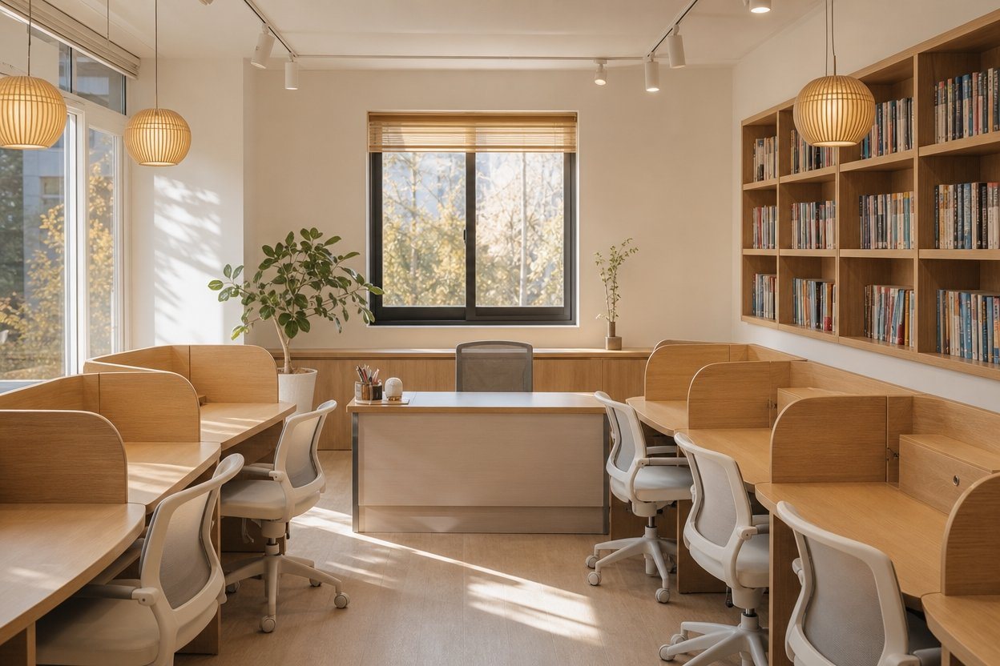

와와학습코칭센터는 어떤 곳인가
2015년 첫 센터를 열어 2025년 전국 205개 센터가 된 자기주도학습 코칭 브랜드. '공부 잘하는 아이'보다 '스스로 공부하는 아이'를 목표로 합니다.

초·중·고 자기주도학습 코칭 전문 브랜드
와와학습코칭센터는 (주)동화세상에듀코가 운영하는 센터형 학습코칭 브랜드입니다. 초등학생부터 고등학생까지를 대상으로 국어·영어·수학을 중심으로 지도하되, 과목 지식보다 공부하는 방법과 습관을 먼저 만드는 것을 목표로 합니다.
강의를 듣고 숙제를 받아 가는 학원과 달리, 코치가 학생을 진단하고 학습을 설계하고 플래너로 실천을 관리합니다. 센터 방문형 수업이며 과목과 운영 방식은 센터마다 조금씩 다릅니다.
10년 동안 쌓인 것들
공간 · 코치 · 관리
집중되는 둥지형 배치
코치를 중심으로 학생들이 둘러앉는 구조는 적당한 긴장감과 안정감을 동시에 줍니다. 옆자리 친구의 태도가 자연스러운 동기가 되고, 질문이 오가는 거리에 코치가 있습니다.
학습코칭 자격을 갖춘 전문가
와와의 코치는 청소년 학습코칭(TLC) 자격 과정을 거친 전문가로, 가르치는 사람이 아니라 진단하고 설계하는 사람입니다. 성적뿐 아니라 진로와 고민까지 함께 보는 멘토 역할을 합니다.
4C로 돌아가는 운영
진단·처방·상담·지도의 4C 프로세스가 반복되며, 정기 진단과 상담으로 학습 방향을 계속 조정합니다. 학생이 공부의 주도권을 갖도록 체계적으로 뒤에서 받칩니다.
걸어온 길
- 2025
소비자가 뽑은 올해의 브랜드 대상(국회 교육위원회 위원장 상) · 모두오름 학습코칭센터 론칭 · 코칭센터 200호점 돌파
- 2024
영어 전문학원 왓칭 론칭
- 2023
학부모가 뽑은 교육브랜드 대상 · 국어·독서·논술 전문 글로리드 론칭
- 2021
수학·과학 전문 더블유플러스 론칭
- 2020
대한민국 퍼스트브랜드 대상(자기주도학습센터 부문) · 코칭센터 100호점 돌파
- 2015
초중고 국영수 전문 와와학습코칭센터 론칭
과목별로 전문화된 학습코칭센터
와와의 코칭 방식을 바탕으로 과목을 전문화한 형제 브랜드입니다. 지역에 따라 운영 브랜드가 다를 수 있어 상담 시 함께 안내합니다.
와와학습코칭센터
기본 브랜드. 초등부터 고등까지 국어·영어·수학 중심, 센터에 따라 사회·과학·기타 과목. 플래너와 둥지학습으로 자기주도학습 코칭.
더블유플러스학습코칭센터
2028 대입 개편으로 중요성이 커진 수학·과학 전문. 1:1 학습 플랜, 밀착 지도, 심화학습, 오답클리닉으로 '수포자'를 되돌립니다.
글로리드학습코칭센터
모든 과목의 바탕인 문해력. 초등 독서 습관과 표현력부터 중·고등 내신, 수능 국어, 논술까지 언어영역 전문 커리큘럼.
모두오름학습코칭센터
과목별 원장 선생님이 직접 지도하는 프리미엄 공간. 맞춤 루틴과 매일 피드백, 몰입에 최적화된 환경.